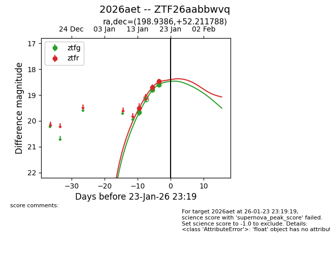
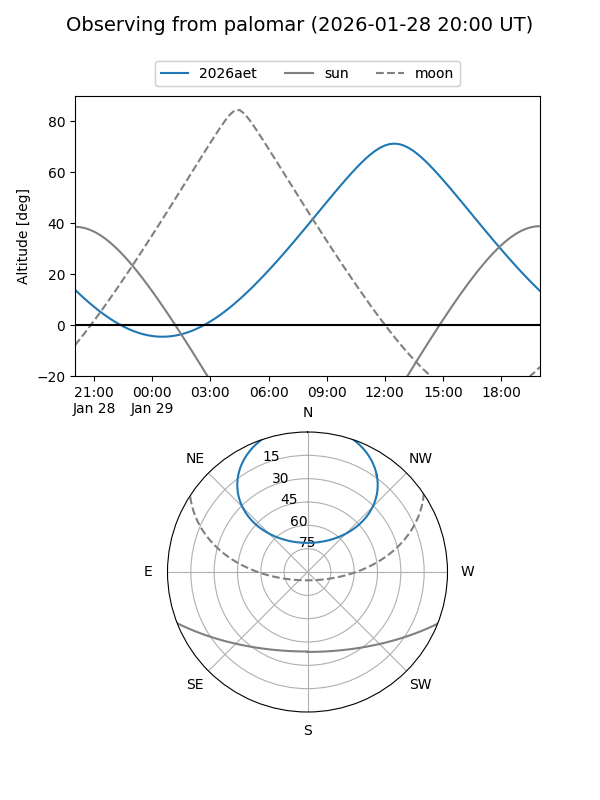
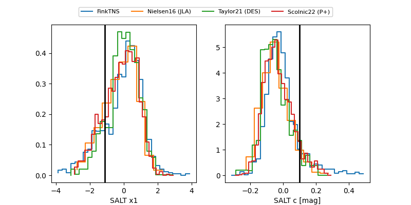

2026aet
Target 2026aet at 2026-01-23 14:11
Aliases and brokers:
FINK: link
Lasair: link
ALeRCE: link
TNS: link
YSE: link
alt names
ZTF26aabbwvq (ztf,fink_ztf)
2026aet (tns,yse)
Coordinates:
equatorial (ra, dec) = 198.9386,+52.21179
equatorial (HMS+DMS) = 13:15:45.26,+52:12:42.44
galactic (l, b) = (114.2611,+64.50516)
Flags:
Photometry:
last ztfg=18.61, ztfr=18.48
3 ztfg, 3 ztfr detections
Lightcurve

Visibility


Additional plots
